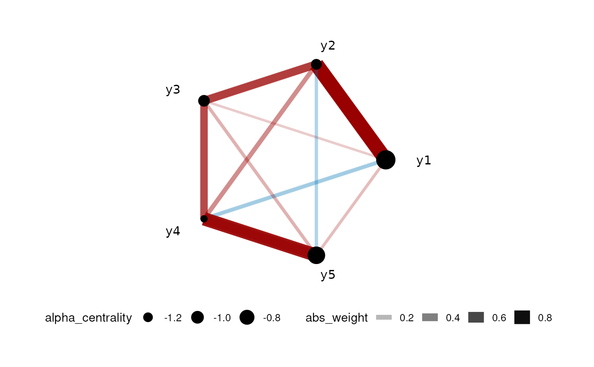

bGlasso.RdMain sampling algorithm of Glasso model, note that the mean is in CAR parameterization
bGlasso( data, link = "identity", r_Omega = 1, delta_Omega = 0.01, n_iter = 2000, n_burn_in = 1000, thin_by = 10, ns = 1000, m = 20, emax = 64, progress = TRUE, verbos = TRUE )
| data | A data.frame with all response, row as observations |
|---|---|
| link | String name of link function? Currently can be "identity" for normal response, "probit" for binary, "log" for counting, "logit" for compositional. Note that when use "logit", the last response will be used as reference. |
| r_Omega | Hyper-parameter for precision matrix, shape parameter of Gamma. Should be a scalar |
| delta_Omega | Hyper-parameter for precision matrix, rate parameter of Gamma. Shoule be a scalar |
| n_iter | Number of sampling iterations (i.e. after burn in) for the Gibbs sampler |
| n_burn_in | Number of burn in iterations for the Gibbs sampler |
| thin_by | Final sample was thin by this number |
| ns | parameter for ARS, maximum number of hulls, only used when link is "log" and "logit" |
| m | parameter for ARS, initial number of hulls, only used when link is "log" and "logit" |
| emax | parameter for ARS, tolerance for small values being 0, larger meaning we tolerate smaller values, only used when link is "log" and "logit" |
| progress | Bool, whether report progress from C++ |
| verbos | Bool, whether show warnings and messages. |
A bglasso_out object with elements:
$point_est
$Omega: Posterior mean of precision matrix
$nodes
$responses: node name of responses
$data
$response: response matrix
$settings: all settings sent to the algorithm, exclude data
$MCMC_output
$mu: A coda::mcmc object, each row was an MCMC sample of the mean vector
$Omega: A coda::mcmc object, each row was an MCMC sample of the upper triangular part (with diagonal) of precision matrix Omega
$lambda: A coda::mcmc object, first column was the shrinkage parameter lambda for regression coefficient and the second column was shrinkage parameter lambda for precision matrix
#> Algorithm start... #> #> progress: #> #> #> done #>